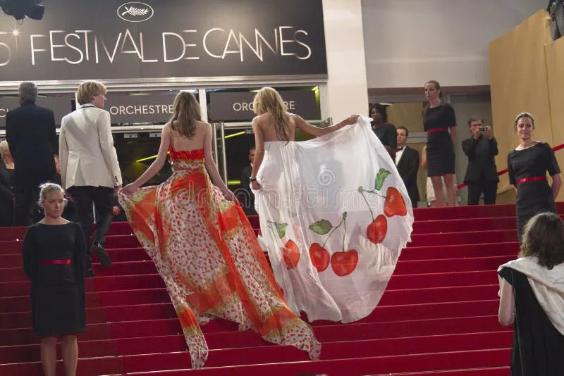
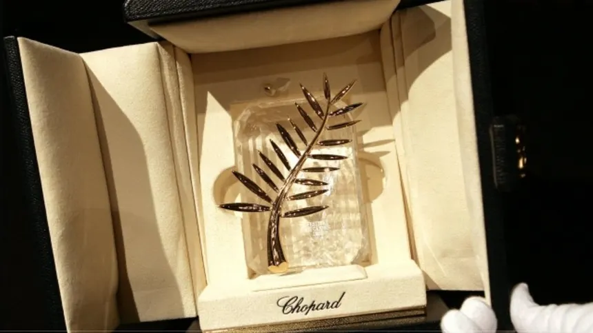
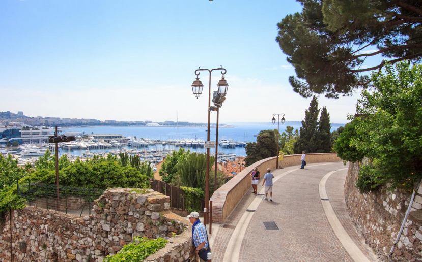

Cannes: A city and its festival
Go to: Introduction | History | The Festival | Landmarks | Fun Facts
Introduction
Cannes is a city where history, culture, and elegance come together along the Mediterranean coast. Once a quiet fishing village, it gradually transformed into a destination known for its charm, beauty, and global influence. From its historic old quarter to its modern role in international cinema through the Cannes Film Festival, the city offers a unique blend of past and present. Its landmarks, traditions, and reputation continue to attract visitors from around the world, making Cannes not only a place of luxury, but also one rich in history and cultural significance.


History
Cannes began as a modest fishing village on the southern coast of France, but its transformation started in the 19th century when British aristocrats, including Lord Brougham, discovered its mild climate and scenic coastline. Their influence helped turn Cannes into a fashionable winter resort, attracting wealthy visitors from across Europe. Over time, luxury hotels, villas, and promenades were built, shaping the city's elegant identity. Cannes gained global recognition in 1946 with the creation of the Cannes Film Festival, which quickly became one of the most prestigious film events in the world. This festival not only elevated the city's cultural importance but also reinforced its reputation as a hub for glamour and international art. Today, Cannes balances its historic charm with modern tourism, hosting major events while preserving landmarks like the old quarter of Le Suquet. Its evolution from a quiet village to a world-famous destination reflects both strategic development and its natural appeal along the Mediterranean coast.
The Cannes Film Festival
The Cannes Film Festival was first conceived in the late 1930s as a response to political interference in the Venice Film Festival, where fascist governments influenced awards. France aimed to create an independent international festival celebrating artistic freedom, and Cannes was chosen as the host city. Although the first planned edition in 1939 was canceled due to the outbreak of World War II, the festival officially began in 1946, quickly attracting global attention. Over the decades, it became one of the most prestigious film events, known for premiering influential films and awarding the famous Palme d'Or, its highest prize. Renowned filmmakers such as Alfred Hitchcock and Quentin Tarantino have been associated with the festival, contributing to its legacy. Beyond cinema, Cannes is also known for its glamour, red carpet appearances, and international celebrities. Today, the festival remains a major cultural event, shaping global cinema trends while continuing to emphasize artistic excellence and creative expression.


Landmarks
Cannes is home to several important landmarks that reflect its history and cultural identity. One of the most notable is Le Suquet, the city's historic old town, where narrow streets and traditional houses preserve the character of the original fishing village. At the top of this hill stands the Église Notre-Dame d'Espérance, built in the 16th and 17th centuries, offering panoramic views of the city and coastline. Another key site is the Palais des Festivals et des Congrès, which hosts the world-famous Cannes Film Festival and symbolizes the city's modern global importance. Along the waterfront lies La Croisette, a famous boulevard lined with luxury hotels, shops, and beaches, representing Cannes' transformation into a glamorous resort destination. Nearby, the Îles de Lérins offer a quieter historical experience, including monasteries and natural landscapes. Together, these landmarks illustrate Cannes' evolution from a small medieval settlement into an internationally recognized cultural and tourist center.


Fun facts
Now, here are 10 Fun Facts about Cannes i bet you didn't know:
- Cannes wasn't always glamorous—before the 19th century, it was just a quiet fishing village until European aristocrats turned it into a luxury winter escape.
- The famous La Croisette stretches about 2 km and is lined with high-end hotels, designer shops, and beaches, making it one of the most iconic seaside promenades in the world.
- The Cannes Film Festival is so exclusive that many films shown there never even get wide theatrical releases.
- Cannes has no sandy beaches naturally—most of its sandy areas are actually imported and maintained artificially.
- The nearby Îles de Lérins are home to a monastery where monks still produce wine using centuries-old techniques.
- During the Middle Ages, Cannes was frequently attacked by pirates, which is why the old town, Le Suquet, was built on a hill for protection.
- The red carpet at the film festival is changed multiple times a day to keep it looking perfect for celebrities and photographers.
- Cannes enjoys over 300 days of sunshine a year, making it one of the sunniest cities in France.
- Luxury yachts fill Cannes' harbor during major events, sometimes costing tens of millions of euros and serving as private party venues.
- The Palais des Festivals et des Congrès has handprints of famous actors outside, similar to Hollywood's Walk of Fame, but with an international focus.